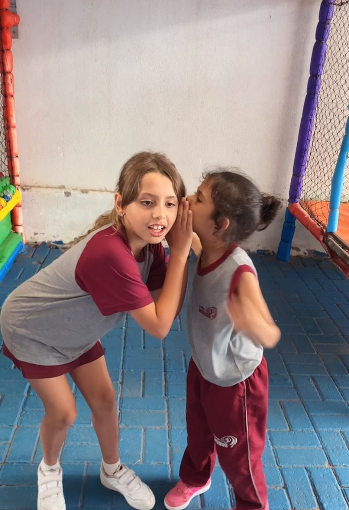

Educação Infantil
Inglês brincando
Contato natural com o idioma por meio de músicas, histórias, brincadeiras e rotinas, na fase em que a criança aprende com mais facilidade. Saiba mais →
No Colégio 1º Mundo, o inglês acompanha seu filho em todas as etapas, do primeiro dia de aula até a formatura.
No Colégio 1º Mundo, o inglês faz parte da rotina escolar desde a Educação Infantil e acompanha o aluno pelo Ensino Fundamental até o Ensino Médio. São anos de trajetória bilíngue, em Hortolândia (SP), do primeiro dia na escola até a formatura.
O ensino bilíngue caminha junto com o Sistema SAS Educação e com a nossa proposta construtivista: o aluno aprende o idioma usando-o de verdade, em situações do dia a dia, projetos e atividades, e não apenas decorando regras.

Aqui, cada etapa prepara para a próxima, também no inglês.
Contato natural com o idioma por meio de músicas, histórias, brincadeiras e rotinas, na fase em que a criança aprende com mais facilidade. Saiba mais →

Leitura, escrita, escuta e conversação ganham espaço, com projetos que conectam o inglês às outras disciplinas. Saiba mais →

Autonomia no idioma para o vestibular, o mercado de trabalho e as oportunidades que o mundo oferece. Saiba mais →
Sim. O Colégio 1º Mundo oferece ensino bilíngue (português e inglês) da Educação Infantil ao Ensino Médio, em Hortolândia (SP).
O ensino bilíngue acompanha o aluno em toda a trajetória: Educação Infantil, Ensino Fundamental (1º ao 9º ano) e Ensino Médio.
Não. O inglês é desenvolvido de forma gradual, respeitando a idade e o nível de cada aluno. Para detalhes da proposta da série do seu filho, fale com a equipe de matrículas.
Na Av. Santana, 1674, no Parque Ortolândia, em Hortolândia (SP), CEP 13184-210.
Matrículas 2027 abertas. Agende uma visita e conheça nossa estrutura e equipe.